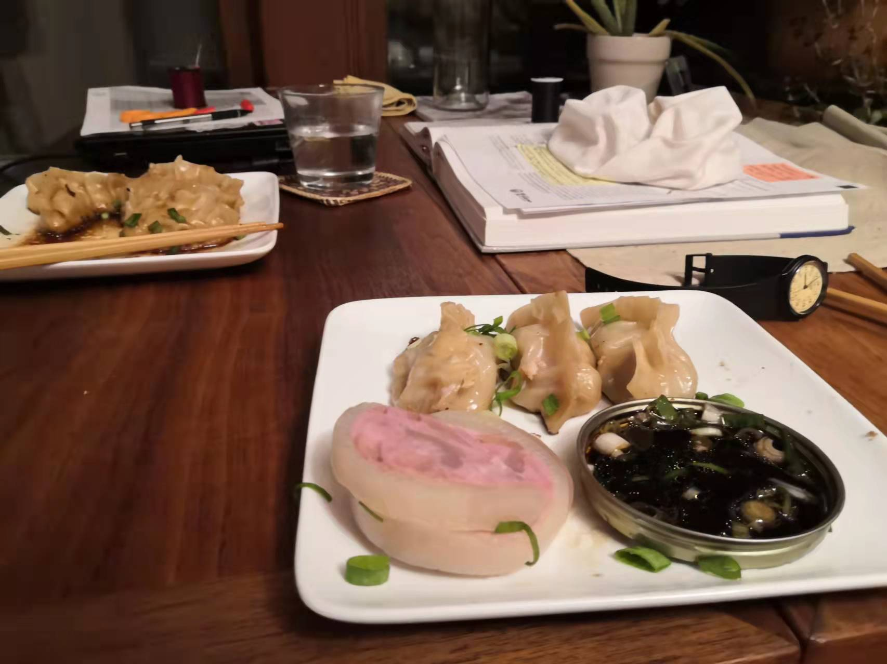
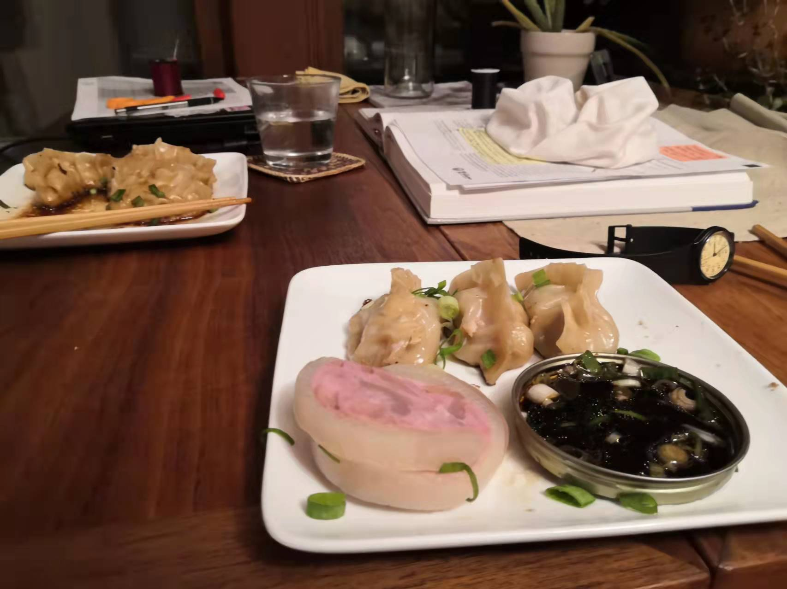

Image Credit: Nika Fleszar
Image Credit: Nika Fleszar
我一旦品出那点心同我的姨妈给我吃过的滋味一样，她住过的那幢临街的灰楼便象舞台布景一样呈现在我的眼前…那时我们家花园里的各色鲜花，还有斯万先生家花园里的姹紫嫣红，还有维福纳河塘里飘浮的睡莲，还有善良的村民和他们的小屋，还有教堂，还有贡布雷的一切和市镇周围的景物，全都渐渐成型，从我的茶杯中浮现了出来。
——马塞尔·普鲁斯特《追忆似水流年》
吃茶吃到普鲁斯特这份上也算是有福了。不过今天要说的与吃茶无关，应该说更接近于泡茶。
都说爱吃的人爱做饭，这当然是一种实在的逻辑。不过依我观察，不爱吃的人寥寥，不擅长做饭的人却满大街跑（或者让外卖小哥满大街跑），可见这个说法也不大可信。究其原因，除了没时间以外，想到两点。
第一点很好理解，好吃的东西未必难做。虽然家常菜也可以发挥“匠人”精神，我们普通人的味蕾也没有那么挑剔。我喜欢吃的东西就很简单。在上海上班，住在家里当然是服从安排，要是咕哝几句怕是吃都没得吃。自己住的时候自由很多。早饭最随便，Bagel和咖啡就糊弄过去。要是去学校，需要带饭，就提前做好披萨啦寿司卷啦，打包在保鲜袋袋里拎着走。不过这样的冷饭口感很差，可以的话还是要赶回家做饭。午饭多做一些，晚饭热一热就可以吃。周末得空尝试些新食材；平常不想费心思就从几个备选里翻牌子。现在想的起来的几个：豆腐青豆切丁，虾仁剥皮，入锅焖十分钟就可以吃；咖喱鸡，土豆滚刀块，和鸡一起用薄薄的一层油煎出脆皮，加上咖喱焖半小时；黑暗一点的，西葫芦切片和corned beef hash一起爆炒，和煮好的粉丝拌在一起；北方人的缘故，家里常备着高筋面粉，疙瘩汤也算是一种将就的选择。最后如果实在懒，煮个玉米碴子或者皮蛋瘦肉粥就可以喝一天，经济实惠。
第二点上做饭和小提琴很相似——刚起步时非常怀疑自己是不是智力有问题。"Eat your own shit"是每个新手的第一课。更多未来的米其林厨师可能还是在第一道坎儿夭折的。最初的大作有多难以下咽，我记忆犹新。锵锵，隆重推出高中暑假的创新菜——年糕炒蛋。蛋已经成了黑炭，年糕还是硬邦邦的，结果就是一盘菜居然没有一样可以吃的。 一个暑假从无处下箸到不敢恭维，算是大的进步了。
每天放学像家庭主妇一样去超市买菜的日子渐渐远去了，留下了些许长进的厨艺，但是还是有些菜肴屡做屡败。我的冤家是糕点类，什么曲奇可颂纸杯蛋糕，不是奇形怪状就是味同嚼蜡。不知道是不是中国人的体质作怪，连带着面包做出来都是一股馒头的味道。
自己做点心如果频率不高的话并不省钱，既然一直做不好，那去买是最省事的，好吃又不多花钱。所以扪心自问，我的本心可能并不是想满足自己的嘴巴，而是想能让一起生活的人吃到想吃的东西，体会到自己的用心，得到一点小小的开心，这样自己也能有一丝小小的满足吧。
这就回到这篇post的主旨：把之前做过的一些东西，留有照片的，归档整理；没有留下的，记录几笔。一方面和翻修小破站的初衷一致，给生活带来一丝井然；另一方面，也方便将来点菜。
但是仔细翻了翻发现照片很少，拍了的也好像闭着眼睛摁的快门一样。想了想大概是这样：成家之前做饭大部分时候还是给自己吃，别说摆盘啦造型啦，一般还在锅里就一手调料瓶一手锅铲开动了。完整的端出来，还悠哉哉地拍一张，就跟贵族的就餐礼仪一样——说明不是很饿。不是很饿还要下厨，这种情况实在少见。至于那些本来就做给别人吃的，我想还是少发的好，发出来感觉像是为了显摆自己而做的。
一部分的美国食谱要感谢我第一年的室友Sarah。她精打细算过日子，是thrift store的常客。举例来说，一个罐头吃完，玻璃瓶成了她的马克杯，罐头盖则拿去种花——小抠门的同时又把生活打理的很精致，倒像个上海人。跟这样的人住一起，除了交流厨艺以外，还见识了一打“原来这也可以自己做吗”的技能。经过一年的洗礼，我也是织过围巾，做过香皂，观摩过私酿葡萄酒的人了。
像普氏这样用半生生活，用另半生追忆这半生，一般人难有这样的奢侈。即便有，我想二十三岁也还在‘用力生活’的这半边。所以除了‘整理国故’以外，一个想法是今后学了新花样也发上来归档。不然技能点的杂，自己也会忘了点过。
- 注：没有留下影像资料的诸位，将姓名纂刻于此，以资后世参考：
- Lemon Mimosa
- 椒盐薯片
- 酱猪肘（耳朵）
- 芒果奶昔
- Basil Lasagna
- 大盘鸡拌面
- 爆米花！
- 过油肉
- Gin and Tonic
- 皮冻
- Cold Brew


 
